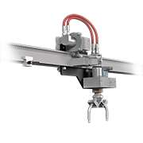
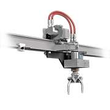
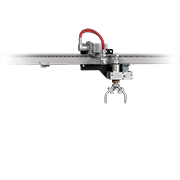
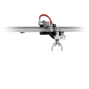

 

OD Pipe Cleaner
The StoneAge Outside Diameter Pipe Cleaner is a powerful and affordable automated solution for cleaning the outer surface of drill pipes used in the oil and gas industry. The length of the system can be easily customized for permanent installation into pipe cleaning facilities providing consistent and efficient removal of drill mud, concrete, slag or other exterior deposits on large volumes of pipe.
- Can be adapted to a variety of pressures and flows for highest level of cleaning efficiency
- Rotation and traverse speed are independently adjustable to customize dwell time
- Several head options available for delivering more concentrated power or covering a wider cleaning path
- Match the stroke length to the pipe sections being cleaned with simple auto-stops for efficient cleaning with no wasted time
- Modular rail allows the assembly to be customized to any length
- Fully automated operation delivers consistent and repeatable results when cleaning thousands of linear feet of pipe lengths
| Tool Model | OD Pipe Cleaner | |
|---|---|---|
| Pressure Range | Up to 40k psi | 2800 bar |
| Flow Range | Up to 50 gpm | 190 l/min |
| Rotation Speed | 50-1000 rpm | |
| Linear Speed | 7-40 ft/min | 2.1-12 m/min |
| Air Supply | 60 cfm @ 80 psi | 100 m/hr @ 5.5 bar |
| Rail Length | Up to 60 ft | 18.3 m |
Our expert staff is available Monday through Friday 8AM - 5PM MST to answer questions and offer advice on your toughest cleaning applications.